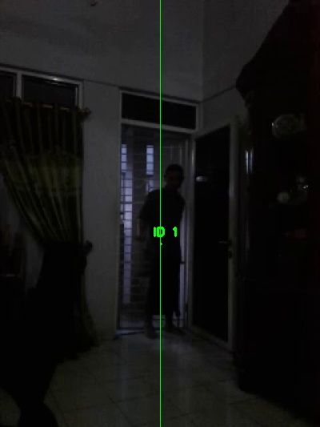
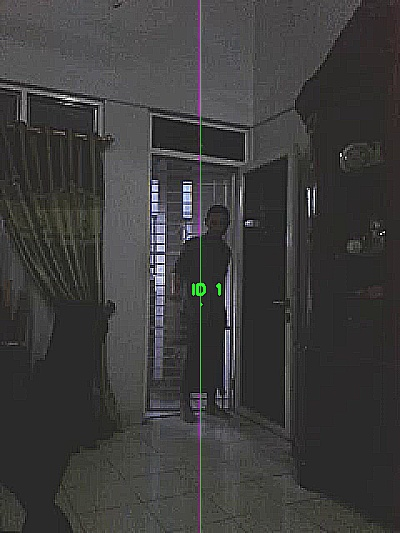

References:
Main flow : https://www.pyimagesearch.com/2018/08/13/opencv-people-counter/
DNN Tensorflow object detector : ssd_mobilenet_v1_coco
Image Sharpening : https://www.ivanjul.com/image-filtering-menggunakan-opencv-python/
https://stackoverflow.com/questions/4993082/how-can-i-sharpen-an-image-in-opencv
Html Free Template : https://www.free-css.com/free-css-templates/page236/clean-blog